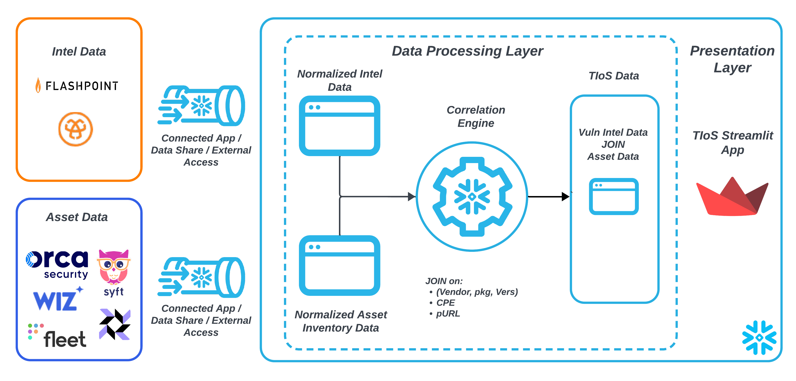

In this guide we demonstrate how Snowflake can be used to create a Vulnerability and Threat Intelligence Streamlit App. Organizations require a Vulnerability and Threat Intelligence App so that they can:
The core use cases for the app are:

A Vulnerability and Threat Intelligence Application through the following steps:
JOINed datasetsSteps to Create a Vulnerability Intel Search Streamlit App
Before executing the create table statements. Open a Snowsight worksheet and select your database and schema at the top of the worksheet.
CREATE OR REPLACE TABLE THREAT_INTEL_RAW_TABLE (
RECORDED_AT TIMESTAMP,
RESULT VARIANT
);
We use Wiz for asset discovery and then conduct our own scan using the "Impacted Packages, Libraries and Prodcuts" from our Flashpoint VulnDB intelligence data which provides real-time intel. This allows us to cover blindspots in Wiz reports that can be caused by vulnerability scan onboarding delay plus scanning delays.
CREATE OR REPLACE TABLE ASSETS (
CONTAINER_VIRTUAL_MACHINE_ROWOBJECTTYPE VARCHAR(16777216),
CONTAINER_VIRTUAL_MACHINE_EXTERNALID VARCHAR(16777216),
SFDEPLOYMENT VARCHAR(16777216),
HOSTED_TECHNOLOGY_CPE VARCHAR(16777216),
SFROLE VARCHAR(16777216),
CONTAINER_VIRTUAL_MACHINE_PROJECTS VARCHAR(16777216)
);
create or replace table tios_saved_filters(
filter_name string,
filter_params variant,
created_on timestamp default current_timestamp,
modified_on timestamp default current_timestamp
);
Follow below steps to load the sample data into the tables created in Step 1.
For detailed instructions on data upload in Snowflake, you can refer to the official Snowflake documentation: https://docs.snowflake.com/en/user-guide/data-load-web-ui
CREATE OR REPLACE TABLE THREAT_INTEL_LANDING_TABLE AS
select
result:THREAT_INTEL_ID::number as threat_intel_id,
result:DESCRIPTION::string as description,
result:KEYWORDS::string as keywords,
result:MANUAL_NOTES::string as manual_notes,
result:SOLUTION::string as solution,
result:T_DESCRIPTION::string as t_description,
result:TITLE::string as title,
result:AUTHORS as authors,
result:CLASSIFICATIONS as classifications,
result:CVSS_METRICS as cvss_metrics,
result:CVSS_VERSION_THREE_METRICS as cvss_version_three_metrics,
try_to_timestamp(result:DISCLOSURE_DATE::string) as disclosure_date,
try_to_timestamp(result:DISCOVERY_DATE::string) as discovery_date,
try_to_timestamp(result:EXPLOIT_PUBLISH_DATE::string)
as exploit_publish_date,
result:EXT_REFERENCES as ext_references,
result:LIBRARIES as libraries,
result:NVD_ADDITIONAL_INFORMATION as nvd_additional_information,
result:PACKAGES as packages,
try_to_timestamp(result:SOLUTION_DATE::string) as solution_date,
try_to_timestamp(result:THIRD_PARTY_SOLUTION_DATE::string)
as third_party_solution_date,
try_to_timestamp(result:VENDOR_ACK_DATE::string) as vendor_ack_date,
try_to_timestamp(result:VENDOR_INFORMED_DATE::string)
as vendor_informed_date,
result:VENDORS as vendors,
try_to_timestamp(result:THREAT_INTEL_LAST_MODIFIED::string)
as threat_intel_last_modified,
try_to_timestamp(result:THREAT_INTEL_PUBLISHED_DATE::string)
as threat_intel_published_date,
result:EPSS_SCORE::string as epss_score,
result:EPSS_PLUS_SCORE::string as epss_plus_score,
result:RANSOMWARE_LIKELIHOOD::string as ransomware_likelihood,
null as details,
vnd.value:name::string as vendor_name,
vnd.value:id::number as vendor_id,
prod.value:name::string as product_name,
ver.value:affected::string as version_affected,
ver.value:name::string as version_name,
cpe_array.value:cpe::string as cpe_purl_pkg,
cpe_array.value:type::string as cpe_type,
prod.value:id as product_id,
ver.value:id as version_id
from THREAT_INTEL_RAW_TABLE,
lateral flatten(vendors) as vnd,
lateral flatten(vnd.value:products) as prod,
lateral flatten(prod.value:versions) as ver,
lateral flatten(ver.value:cpe) as cpe_array
where
title not like 'DEPRECATED:%'
and result:BODY:ERROR::string is null
qualify 1 = dense_rank() over (
partition by threat_intel_id
order by
threat_intel_last_modified
desc
)
;
CREATE OR REPLACE VIEW CPE_EXACT_MATCH_JOIN AS
with threat_intel as (
select
split_part(cpe_purl_pkg,':',4) as vendor,
split_part(cpe_purl_pkg,':',5) as product,
case when split_part(cpe_purl_pkg,':',6) ilike '%all versions%' then '' else split_part(cpe_purl_pkg,':',6) end as v
,case when v is null or v = '' then 'Unspecified' else v end as version
,*
from THREAT_INTEL_LANDING_TABLE
),
asset_cpe as (
select
split_part(HOSTED_TECHNOLOGY_CPE,':',3) as asset_vendor
,split_part(HOSTED_TECHNOLOGY_CPE,':',4) as asset_product
,split_part(HOSTED_TECHNOLOGY_CPE,':',5) as asset_v
,case
when asset_v is null or asset_v = ''
then 'Unspecified'
else asset_v
end as asset_version
,*
from ASSETS
)
select distinct
v.threat_intel_id
,v.title
,v.cpe_purl_pkg
,CONTAINER_VIRTUAL_MACHINE_ROWOBJECTTYPE
,CONTAINER_VIRTUAL_MACHINE_EXTERNALID
,w.HOSTED_TECHNOLOGY_CPE
,CONTAINER_VIRTUAL_MACHINE_PROJECTS
,SFROLE
,SFDEPLOYMENT
,v.details as cpe_details
,cvss_version_three_metrics
,ext_references
,solution
,THREAT_INTEL_LAST_MODIFIED
,THREAT_INTEL_PUBLISHED_DATE
,SOLUTION_DATE
,v.vendor
,w.asset_vendor
,v.product
,w.asset_product
,v.version
,w.asset_version
,v.epss_score
,v.epss_plus_score
,v.classifications
,v.ransomware_likelihood
from threat_intel v
inner join asset_cpe w
on (
(v.vendor, v.product, v.version) = (w.asset_vendor, w.asset_product, w.asset_version)
)
;
Further increase the matches by consider major and minor version matches as well.
CREATE OR REPLACE VIEW CPE_MAJOR_MINOR_MATCH_JOIN AS
with asset_cpe as (
select
split_part(HOSTED_TECHNOLOGY_CPE,':',3) as asset_vendor
,split_part(HOSTED_TECHNOLOGY_CPE,':',4) as asset_product
,split_part(HOSTED_TECHNOLOGY_CPE,':',5) as asset_version
,split(asset_version,'.') brr
,brr[0]::integer b_w
,brr[1]::integer b_x
,brr[2]::integer b_y
,brr[3]::integer b_z
,array_construct_compact(b_w,b_x,b_y,b_z) new_brr
,*
from ASSETS
where 1=1
and asset_version REGEXP '^[0-9]+(\\.[0-9]+)+$' = true
),
threat_intel as (
select
split_part(cpe_purl_pkg,':',4) as vendor,
split_part(cpe_purl_pkg,':',5) as product,
case
when split_part(cpe_purl_pkg,':',6) ilike '%all versions%' then ''
else split_part(cpe_purl_pkg,':',6)
end as version
,split(version,'.') arr
,arr[0]::integer a_w
,arr[1]::integer a_x
,arr[2]::integer a_y
,arr[3]::integer a_z
,array_construct_compact(a_w,a_x,a_y,a_z) new_arr
,*
from THREAT_INTEL_LANDING_TABLE
where version REGEXP '^[0-9]+(\\.[0-9]+)+$' = true
and cpe_purl_pkg not in (
select distinct cpe_purl_pkg
from CPE_EXACT_MATCH_JOIN
)
and vendor in (select distinct asset_vendor from asset_cpe)
),
joined as (
select
v.threat_intel_id
,v.title
,v.cpe_purl_pkg
,CONTAINER_VIRTUAL_MACHINE_ROWOBJECTTYPE
,CONTAINER_VIRTUAL_MACHINE_EXTERNALID
,w.HOSTED_TECHNOLOGY_CPE
,CONTAINER_VIRTUAL_MACHINE_PROJECTS
,SFROLE
,SFDEPLOYMENT
,v.details as cpe_details
,cvss_version_three_metrics
,ext_references
,solution
,THREAT_INTEL_LAST_MODIFIED
,THREAT_INTEL_PUBLISHED_DATE
,SOLUTION_DATE
,v.vendor
,w.asset_vendor
,v.product
,w.asset_product
,version as v_ver
,asset_version w_ver
,array_to_string(array_slice(new_arr,0,2),'.') vuln_ver
,array_to_string(array_slice(new_brr,0,2),'.') asset_ver
,(
(a_w = b_w) AND
(a_x IS NULL OR b_x IS NULL OR a_x = b_x) AND
(a_y IS NULL OR b_y IS NULL OR a_y = b_y) AND
(a_z IS NULL OR b_z IS NULL OR a_z = b_z)
) as v_match
,v.epss_score
,v.epss_plus_score
,v.classifications
,v.ransomware_likelihood
from threat_intel v
inner join asset_cpe w
on (v.vendor, v.product) = (w.asset_vendor, w.asset_product)
where v_match
)
select distinct
threat_intel_id
,title
,cpe_purl_pkg
,CONTAINER_VIRTUAL_MACHINE_ROWOBJECTTYPE
,CONTAINER_VIRTUAL_MACHINE_EXTERNALID
,HOSTED_TECHNOLOGY_CPE
,CONTAINER_VIRTUAL_MACHINE_PROJECTS
,SFROLE
,SFDEPLOYMENT
,cpe_details
,cvss_version_three_metrics
,ext_references
,solution
,THREAT_INTEL_LAST_MODIFIED
,THREAT_INTEL_PUBLISHED_DATE
,SOLUTION_DATE
,vendor
,asset_vendor
,product
,asset_product
,v_ver version
,w_ver asset_version
,epss_score
,epss_plus_score
,classifications
,ransomware_likelihood
from joined
Finally, consolidate all matches into a single view
CREATE OR REPLACE VIEW CPE_CONSOLIDATED_VIEW
AS
with consolidated as (
select
*
from CPE_EXACT_MATCH_JOIN
union all
select
*
from CPE_MAJOR_MINOR_MATCH_JOIN
)
select
a.*,
case when CONTAINER_VIRTUAL_MACHINE_PROJECTS ILIKE '%prod%' then 'prod' else 'non-prod' end as environment,
b.value:source::string source,
concat('CVE-',b.value:cve_id) cve_id,
b.value:score::string cvss,
case
when (cvss >= '9.0'::float) then 'critical'
when ((cvss >= '7.0'::float) and (cvss <= '8.9'::float)) then 'high'
when ((cvss >= '4.0'::float) and (cvss <= '6.9'::float)) then 'medium'
else 'low'
end as severity,
b.value:generated_on::timestamp generated_on
from consolidated a, lateral flatten(cvss_version_three_metrics) b
qualify 1 = row_number() over(partition by b.seq,b.value:source,coalesce(b.value:cve_id,'') order by generated_on desc)
The Streamlit app is located in this repository. The app can be run locally (on a mac) or can be deployed in SIS and is setup in such a way that it is compatible with both.
minicondabrew install miniconda
conda init zsh
conda create \
--name streamlit-tios python=3.10 \
--override-channels \
-c https://repo.anaconda.com/pkgs/snowflake
.streamlit/secrets.toml [snowflake]
user="my_snowflake_username"
authenticator="externalbrowser" # or password
account="my_account_id"
warehouse="DEV_WH"
database="my_db"
schema="TIOS_DEV"
role="my_tios_role"
conda activate streamlit-tios
pip install --upgrade -r requirements-dev.txt
streamlit run tios/1_tios_app.py
We use snowflakecli to do the deployments.
pip install git+https://github.com/Snowflake-Labs/snowcli.git@v2.2.0
~/.snowflake/config.toml to setup connections required by snowflakecli [connections]
[connections.tios_dev]
account = "my_account_id"
user = "my_username"
authenticator = "externalbrowser"
database = "my_db"
schema = "TIOS_DEV"
warehouse = "DEV_WH"
role = "my_tios_role"
snow streamlit deploy -c tios_dev --project=./ --replace
The first use case is when there is a new vulnerability disclosure and a CISO is tasked with assessing impact to their environment and has to answer customers if they are impacted. In such a use case, the TIOS Streamlit app can be used to do a CVE ID lookup and find the number of impacted assets.
In the filter form, enter "CVE-2023-0466" into the CVE ID field and apply filter. You will see a number of results. In this case unfortunately we are affected by this vulnerability based on the coverage of our asset scanners.
Similarly, enter "CVE-2024-1234" in to the CVE ID textbox of the filter form and apply filters. You will see there are no results implying that we're not affected by this vulnerability based on the coverage of our asset data.
NOTE: Does not having any results mean we're not impacted by a vulnerability? No! It just means that through the lens our asset data we don't see any assets impacted. The vulnerability could be present in assets that are not currently covered by our asset scanning. This shows the importance of our asset coverage.
For our second use case, let us consider a scenario where we found Indicators of Compromise (IOC) on one of our assets. We now want to lookup the attack surface on that asset as part of the incident response investigation that will also guide our remediation efforts. In this case, TIOS Streamlit app can be used to perform an asset ID lookup.
Paste "i-0o4pkw8dveyp2ijvd" in to the "Asset ID" textbox of the filter form and apply filter. You'll see some results returned which show the unique number of vulnerabilities affecting packages in assets within the organization.
As another example input "i-1234" into the Asset ID textbox of the filter form and apply filter. You'll notice that there no results returned. This means that the asset ID: "i-1234" is not impacted by any vulnerabilities at the moment.
For our final use case. We find that a headline vulnerability such as log4j emerges and we need to quantify the presence of a package within our environment. In this case TIOS Streamlit app can be used to perform a Package Name lookup.
Paste "openssl" into the "Package Name" textbox of the filter form and apply filter. You'll notice some results.
These results represent vulnerable versions of the package found in various compute instance across the organizations. We can then use this to guide our patching efforts in order to notify each service team of the compute instances in their control.
Congratulations! You have successfully built a Vulnerability and Threat Intelligence App using Snowflake, Snowpark and Streamlit and used it in a couple of security use cases.
Here is the overview of what we built: